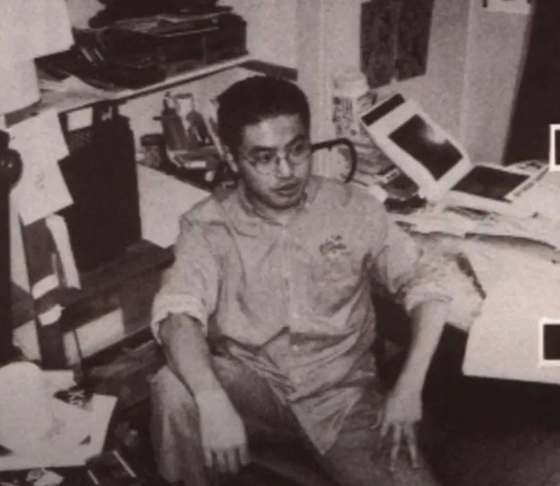
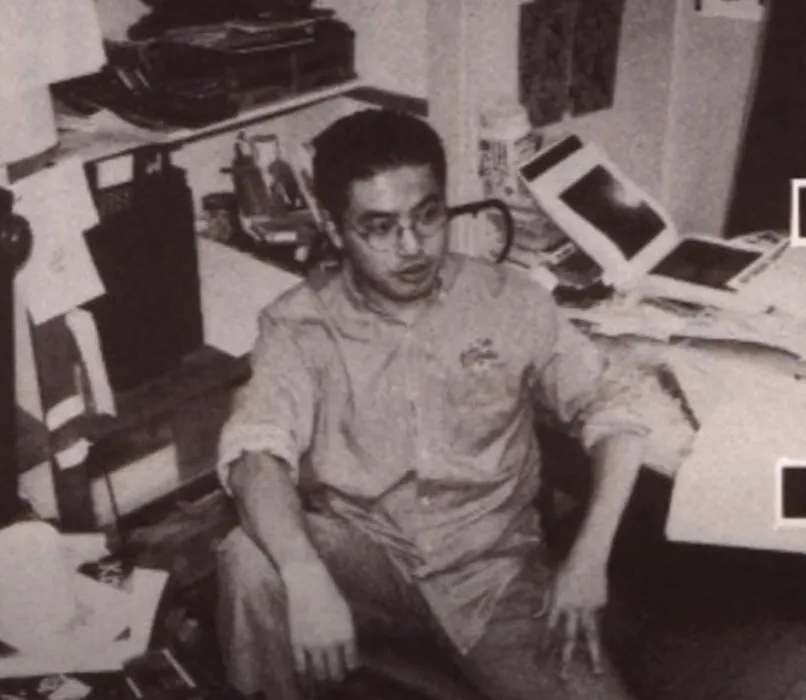

Фото
Фото Кентари Міури |
||
 |
 | |
Деякі старниці з манги Берсерк |
||
Біографія Кентаро Міури
| Біографія | Фото | Роботи | Контакти |
Кентаро Міура народився в японському місті Тіба 11 липня 1966 року.
У 1976, коли він ще вчився в початковій школі і йому було тільки десять років, Міура>почав працювати над мангою. Його перша робота «Miuranger» була опублікована для однокласників в шкільному виданні. З часом «Miuranger» був завершений в 40 томах. Рік потому, Міура почав працювати над мангою «Шлях Меча» (яп. 剣への道).
До 1979 року і в середній школі Міура почав використовувати в роботі растри і професійні методи малювання.
У 1982 він поступив на художні курси в середній школі, де разом зі своїми однокласниками публікував свої роботи в шкільних виданнях, тоді ж, в журналі для фанів був випущений його перший додзінсі.
У 1985 році Міура подає заявку на складання вступного іспиту в Ніхонський університет на художній факультет. Як вступна робота він представив свою нову манґу «Futanabi» і був прийнятий. Пізніше за цю роботу Міура був номінований журналом «Shonen» як найкращий автор-початківець. У тому ж році в «Shonen» виходить чергова його робота — «Noa». Проте в результаті розбіжностей з одним з редакторів, журнал перестає друкувати роботи Міури. Цей час можна охарактеризувати як спад в кар'єрі манґаки.
У 1988 році Міура випускає свою нову роботу, нині відому як «Берсерк: Прототип». У ній він вперше знайомить читача з фентезійним світом манґи «Berserk» і її головним героєм. За цю роботу мангака отримує приз від Comi Manga School.
Закінчивши курс, в 1989 Міура випустив нову роботу «Король вовків» (яп. 王狼), створену за сценарієм Йосіюкі Окамури, автора «Hokuto no Ken» (укр. Кулак Полярної зірки). «Король вовків» був виданий в щомісячному журналі «Japanese Animal House», в 5-му та 7-му випусках за 1989 рік. Також був випущений окремий том «Короля вовків».
З 2-го до 6-го випуску «Animal House» в 1990 вийшло продовження «Вовчого короля». Воно називалося "Легенда про короля вовків" (яп. 王狼伝) и також було засновано на сценарії Окамури. «Легенда про короля вовків» виходить окремим томом в той же самий рік, але що важливіше — виходить перший том Берсерку, який, проте, залишився практично непоміченим. Іншою роботою, що об'єднала зусилля Міури і Окамури в 1992, була манґа «Японія», що виходила в «Animal House» з 1 по 8 випуск, і пізніше випущена окремим томом. У 1992 році в «Young Animal» почала виходити арка «Золоте Століття», яка принесла «Берсерку» і його авторові довгождану популярність. У тому ж році Міура вирішує присвятити себе виключно Берсерку.
У 1997 році виходить аніме-серіал «Berserk» (яп. 剣風伝奇ベルセルク) створений студією OLM при співпраці з Міурою. Серіал налічував 25 серій і був показаний в Японії на Nihon TV, в нічний час.
У 1999 році Міура брав участь в створенні гри по мотивах власної манґи для приставки Sega Dreamcast, яка вийшла в 2000 році У США вона відома як «Sword of the Berserk: Guts’ Rage» (укр. Меч Берсерка: Лють Гатса).
У 2002 за мангу «Berserk» Кентаро Міура отримав друге місце на фестивалі Osamu Tezuka Cultural Prize (перший приз отримав Такехіко Інує за мангу «Блукач»), що принесло йому 1 мільйон єн.
Кентаро Міура помер 6 травня 2021 від розриву аорти. Інформація про це була опублікована на офіційному сайті Hakusensha 20 травня.
Фото Кентари Міури |
||
|
 | |
Деякі старниці з манги Берсерк |
||
| email: ilendzeier.artem@lll.kpi.ua | telegram: higashikata1116 | mob. +xxxxxxxxxxxx |
|---|